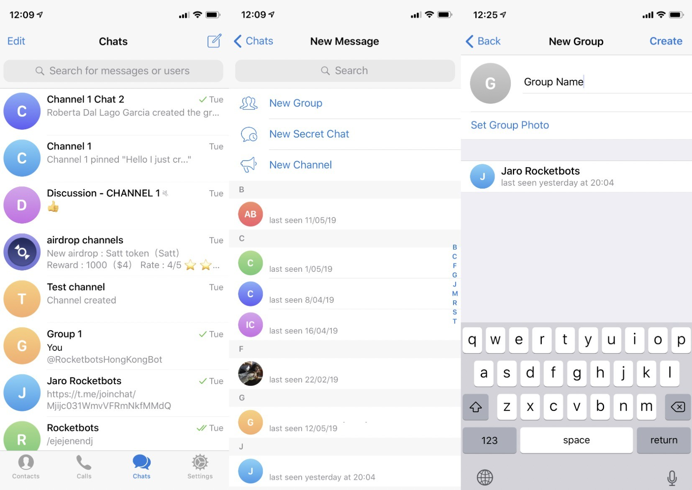
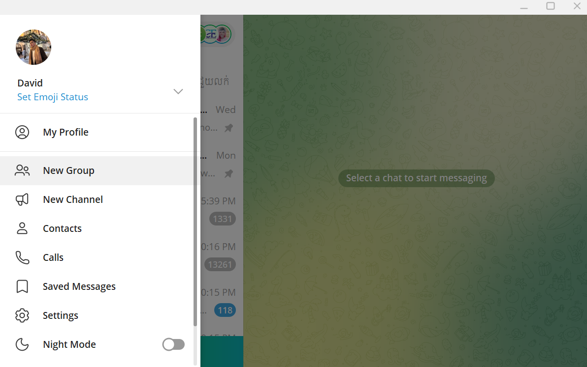
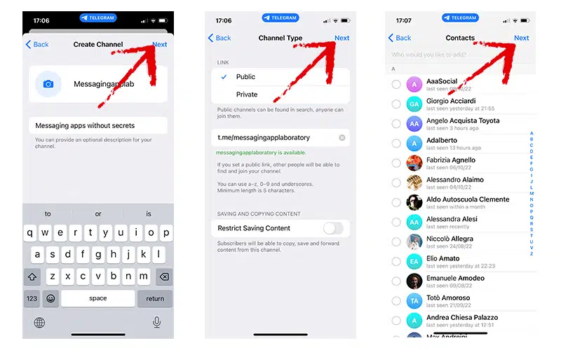
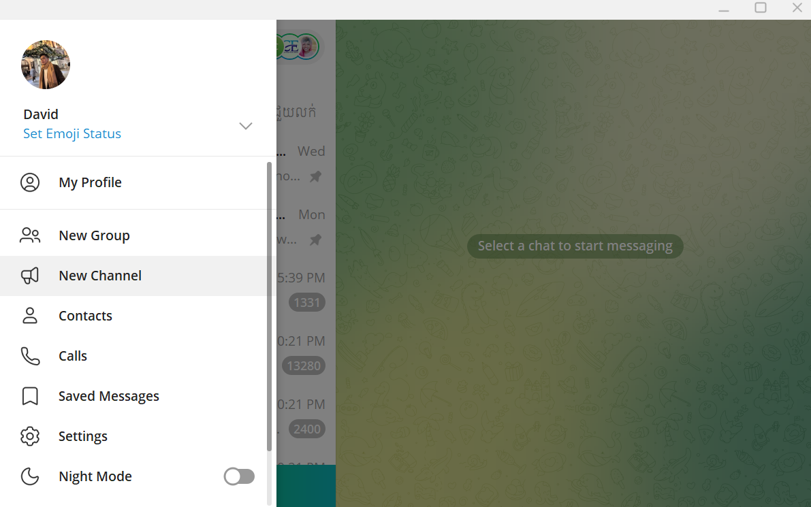
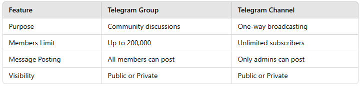
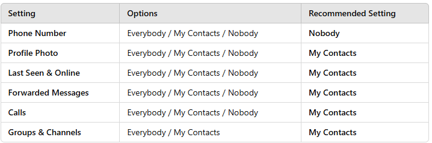

1. Introduction
Telegram is a cloud-based messaging app that allows users to send text messages, voice notes, media files, and make voice and video calls. It is known for its speed, security, and ability to handle large groups and channels. Telegram also supports features like end-to-end encryption for private chats, customizable notifications, and bots for automating tasks. With a focus on privacy and ease of use, Telegram has become a popular alternative to other messaging platforms, offering both individual and group conversations, as well as support for file sharing, large media uploads, and more.
2. Install / Download
Download the Telegram app from Google Play (Android), App Store (IOS), or access via Telegram Web.
3. Creating an Account
To create a Telegram account, download the Telegram app, open it, enter your phone number, and follow the verification process by entering the code sent to your phone.
1. Setup Username
In Telegram, a username is used to uniquely identify users, allowing others to contact them without needing their phone numbers.
1. Edit Profile
Allows you to update your personal information, including your name, profile picture, bio, and username, to customize your identity on the platform.

1. Creating Groups
Mobile App
1. Open Telegram App.
2. Tap the menu icon (three horizontal lines) on Android or the "New Message" icon on iOS.
3. Select "New Group".
4. Choose the contacts you want to add to the group.
5. Tap Next.
6. Enter a Group Name and choose a Group Picture (optional).
7. Tap Create.
On Desktop/Web Version
1. Open the Telegram Desktop or Web.
2. Click the three-line menu on the top left and select "New Group".
3. Choose the contacts you want to add.
4. Enter the Group Name and upload a Group Picture (optional).
5. Click Create.
Group Settings & Management Tips
1. Private Group (only invited users can join).
2. Public Group (anyone with the link can join).
Assign admins to manage messages, approve new members, or pin messages.
Permissions: Control who can post messages, add members, or share media.
1. Creating Channels
Mobile App
1. Open Telegram App.
2. Tap the menu icon (three horizontal lines) on Android or the "New Message" icon on iOS.
3. Select "New Channel".
4. Enter a Channel Name, Description, and Channel Picture.
5. Choose Public (searchable by username) or Private (joinable via invite link).
6. Tap Next and Add Members if needed..
On Desktop/Web Version
1. Open the Telegram Desktop or Web.
2. Click the three-line menu on the top left and select "New Channel".
3. Enter your Channel Name, Description, and Channel Picture.
4. Choose Public or Private.
5. Add members or skip this step.
Key Differences Between Groups and Channels:
1. Account Privacy Settings
To protect your personal information, you can customize who sees your details such as your phone number, profile picture, and online status.
How to Access Privacy Settings:
1. Open the Telegram App.
2. Go to Settings > Privacy and Security.
Here’s what you can control:
2. Two-Step Verification (Extra Security Layer)
Two-step verification adds a password in addition to your SMS code to prevent unauthorized access to your account.
How to Enable Two-Step Verification:
1. Go to Settings > Privacy and Security > Two-Step Verification.
2. Set a password and add a recovery email.
Tip: Use a strong, unique password that isn’t used for other services.
3. Secret Chats (End-to-End Encryption)
Telegram offers Secret Chats with end-to-end encryption to ensure your messages stay private.
How to Start a Secret Chat:
1. Open a chat with a contact.
2. Tap the profile name.
3. Select Start Secret Chat.
4. Self-Destruct Timer for Account Inactivity
Telegram allows you to automatically delete your account after a set period of inactivity.
How to Set a Self-Destruct Timer:
1. Go to Settings > Privacy and Security > Delete My Account If Away For.
2. Choose between 1 month, 3 months, 6 months, or 1 year.
5. Manage Active Sessions (Log Out of Other Devices)
Telegram allows you to see all devices where your account is logged in.
How to Check Active Sessions:
1. Go to Settings > Privacy and Security > Active Sessions.
2. Review and log out from any unfamiliar devices.
6. Lock Your Chats (Passcode Lock)
You can lock your Telegram app with a passcode or fingerprint to prevent unauthorized access.
How to Enable Passcode Lock:
1. Go to Settings > Privacy and Security > Passcode Lock.
2. Set a 4-digit passcode or use biometric authentication (fingerprint/face unlock).